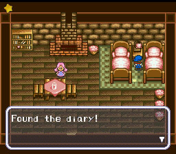
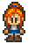
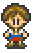
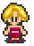
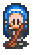
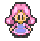

-Esposas Disponíveis- |
|
Neste jogo há 5 esposas disponíveis para você se casar. Cada uma delas tem por volta a mesma idade e todas são encontradas na cidade. Ganhe elas aumentando seu nível de coração mostrado em seus diários, que fica na casa de cada uma delas. Alcance o coração de nível 5 e você terá a opção de se casar.
Antes de se casar, lembre-se que precisa aumentar sua casa para Casa de Madeira de Luxo. |
 |
| Ann |
Residência: Loja de ferramentas |
Personalidade: Ann pode ser descrita como uma garota que age como um garoto. Ela ama inventar coisas novas. uma das suas invenções no jogo é o Super Regador. Ela frequentemente é encontrada trabalhando em alguma coisa na loja de ferramenta. |
Horário: Segunda a Sexta ela é encontrada dentro da loja de ferramenta. No Sábado ela fica em frente a loja, e nos domingos Ann pode ser encontrada dormindo dentro da igreja. Durante O Festival da Noite Estrelada(Véspera de Natal)Ela está no Spa. Depois de se casar ela estará trabalhando dentro do seu galpão de ferramentas. |
Presentes: Perfume Azul, Tortas, Flores, Não gosta de ervas da montanha |
| Ellen |
Residência: No Restaurante |
Personalidade: Ellen é uma amante dos animais e frequentemente é encontrado fora da loja de animais. Ela é a garota que dá a você seu cachorro no primeiro dia. |
Horário: De Segunda a Sábado ela espera do lado de fora em frente a loja de animais, e domingos ela está dentro da igreja. No Festival da Noite Estrelada ela está esperando na praça da cidade. |
Presentes: Torta, ovos, flores e leite. Sem perfume, cogumelos ou cogumelos venenosos. |
| Eve |
Residência: No Bar |
Personalidade: Eve tem uma natureza agitada e extrovertida. Ela adora tudo que lida com bagas, vinho, vinhas e etc. Ela mora e trabalha no Bar. |
Horário: Segunda a Sexta está na Praça da Cidade, Sábado caminhando pela montanha, e Domingo está no Spa. No Festival da Noite EstreladaEve está dentro do Bar. |
Presentes: Perfume Rosa, flores, frutas do verão, uvas silvestres.Não gosta de peixe, cogumelos ou cogumelos venenosos. |
| Maria |
Residência: Na Mansão do Prefeito |
Personalidade: Maria é uma daquelas garotas boazinhas que vai a igreja. Ela está sempre falando sobre um "Ser Superior" ou algo pertecente a igreja. Um de seus talentos é tocar orgão/piano. |
Horário: De Segunda a Sexta ela está varrendo do lado de fora próximo a igreja. No final de semana ela está dentro da igreja, como também durante o Festival Estrelado. |
Presentes: Perfume Verde e flores. Ela não gosta de torta, cogumelos venenosos e ervas da montanha. |
| Nina |
Residência: Na Loja de Flores |
Personalidade: Nina é obcecada com plantas e flores. Ela adora o ar livre e passear na montanha. |
Horário: Segunda a Sexta, Nina está caminhando do lado de fora da Loja de Flores. Aos Sábados ela está dentro da caverna, e nos Domingos ela está no topo da montanha colhendo flores. Durante o Festival EstreladoEla está no topo da montanha. |
Presentes: Dê a ela Perfume Verde, tortas e flores. Nina não fica feliz com Ervas, cogumelos ou cogumelos venenosos. |
Depois do casamento não se junte com outras garotas e esteja em casa as 18:00 todas as noites.